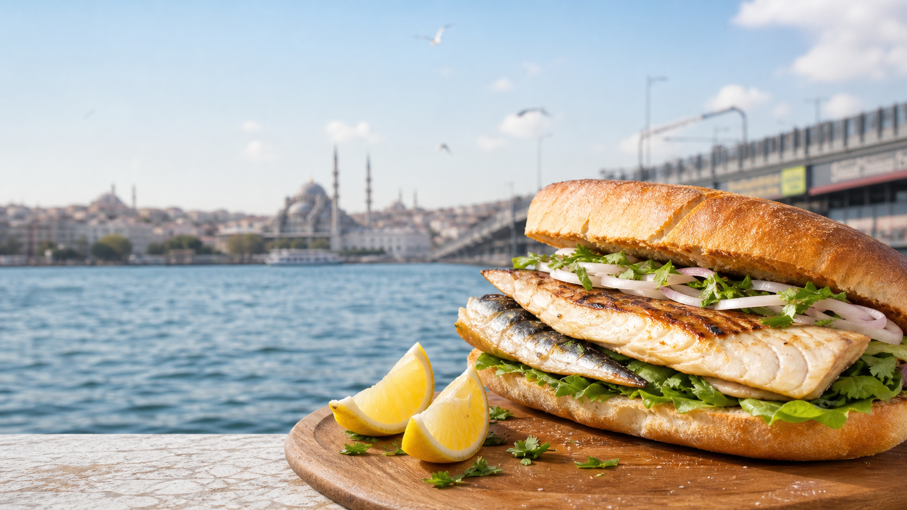
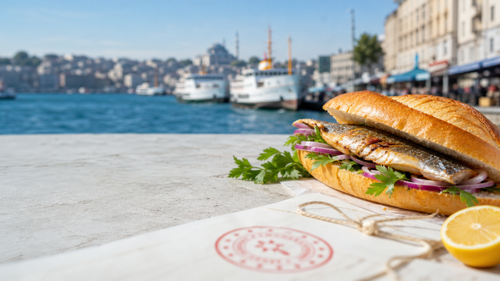
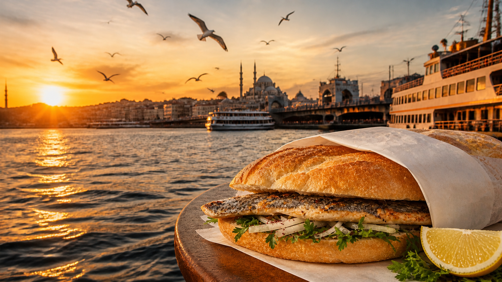

Sahilde başlayan, İstanbul belleğine yerleşen tat
Eminönü Balık Ekmek; sıcak ekmek arasında servis edilen ızgara balık, taze yeşillik, soğan ve limonla hazırlanan, Eminönü sahil hattı ve Galata Köprüsü çevresiyle özdeşleşmiş bir sokak lezzetidir.
Mahreç işaretli lezzet
İstanbul'un denizle kurduğu gündelik bağın en bilinen lezzeti; sahil ritmi, sıcak ekmek, ızgara balık ve yalın sunumuyla kentin hafızasında yer eden coğrafi işaretli bir üründür.

Eminönü Balık Ekmek; sıcak ekmek arasında servis edilen ızgara balık, taze yeşillik, soğan ve limonla hazırlanan, Eminönü sahil hattı ve Galata Köprüsü çevresiyle özdeşleşmiş bir sokak lezzetidir.
Türk Patent'e göre coğrafi işaretler, belirgin niteliği, ünü veya diğer özellikleri bakımından bir yöreyle özdeşleşmiş ürünleri gösterir. Eminönü Balık Ekmek bu kapsamda mahreç işareti olarak tescillenmiştir.
Resmi kayıt
Ürünün tescil sahibi İstanbul Ticaret Borsası'dır. Tescil, ürünün ayırt edici kimliğinin korunması ve doğru tanıtılması için resmi dayanak oluşturur.


Sicil belgesi
Eminönü Balık Ekmek'in tescil bilgilerini ve resmi belge içeriğini PDF olarak görüntüleyebilirsiniz.